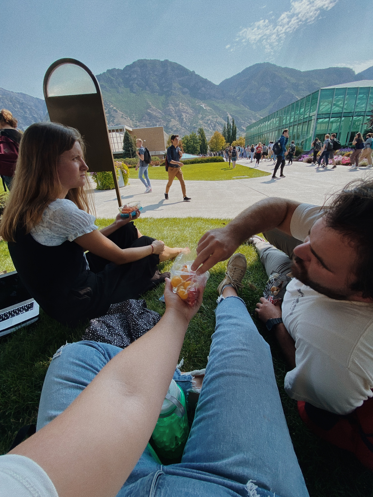

Starting my third year at BYU has been sort of a crazy experience. When did I turn into one of the older kids on campus? How is everyone in all of my classes married?
I found myself feeling pretty stressed these past few weeks, but I did notice that there were some good ways to deal with it. My favorite way was probably meeting up with friends to eat snacks on campus.

Meeting on the grassy knoll
I'm definitely grateful to have my older brother on campus as well!
Here's an overview of what I'm learning in each of my classes this semester.
Social Development
In this class, I am learning about how we as humans develop our social skills and the schemas and scripts surrounding social interactions. It seems pretty interesting, but there is way too much reading.
Media, Family and Human Development
This class is all about media. Finally, a reason to be on Instragram while I'm studying!
Adolescent Development
I'm learning all about what it is like to be a teenager. Luckily for me, those years aren't too far gone. I remember them all too well!
Intuitive Eating
This class is teaching me all about intuitive eating and body image. This class has helped me really focus on my goal to cook more and nourish my body this year.
Web Design
Web Design is sort of kicking my butt. I have no idea what is going on most of the time, but I am definitely excited to learn more.